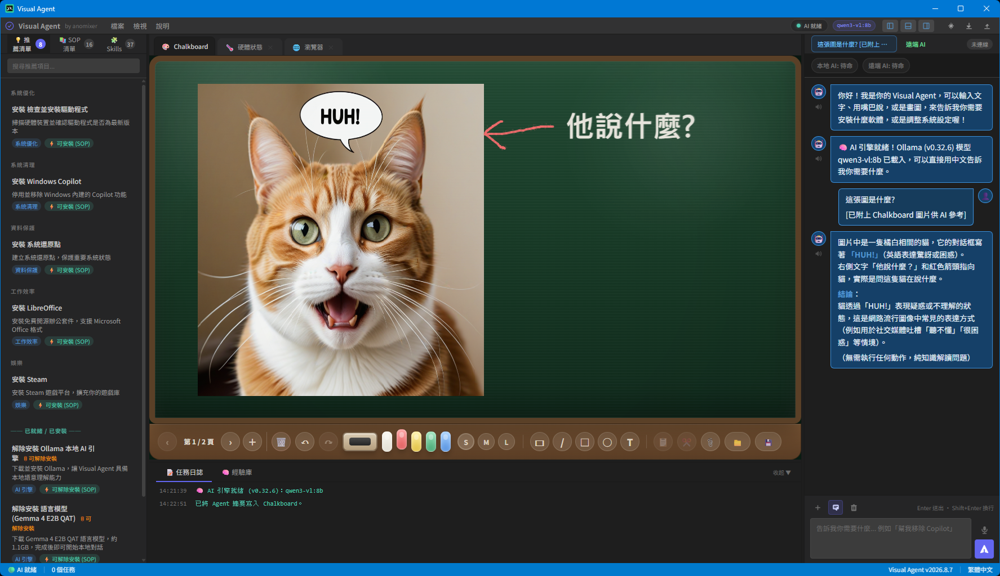

從 Releases 下載安裝版最簡單;想從原始碼跑,照下面步驟即可。
內建粉筆畫布與多模態視覺理解,隨手塗鴉、放圖、標記,讓 AI 看懂並給出精準建議。
任何系統變更前先加入待辦清單,等你手動確認才執行,防止無人值守的自動修改。
即時探測 CPU、GPU、RAM、Disk,並能精準監控 NVIDIA 顯卡的溫度、VRAM 與負載。
兩台電腦透過專用協議連線,本地 AI 先答、遠端 AI 隨後補充,輕鬆多機協同管理。
每次任務成敗沉澱至本地經驗庫,自動遮罩敏感資訊,下次主動避坑、持續進化。
整合 winget、Microsoft Store、GitHub Releases,為 Chrome、Steam、Office 打造防錯安裝/移除鏈。
